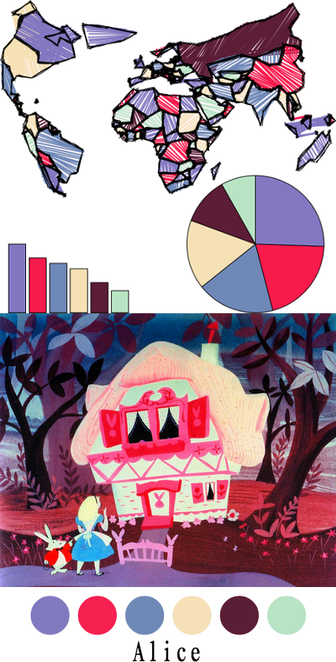
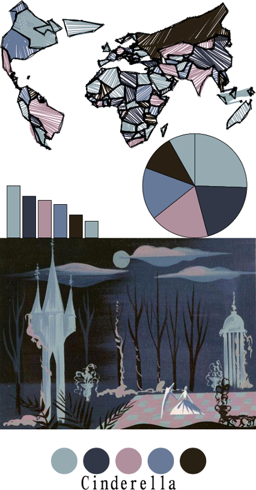
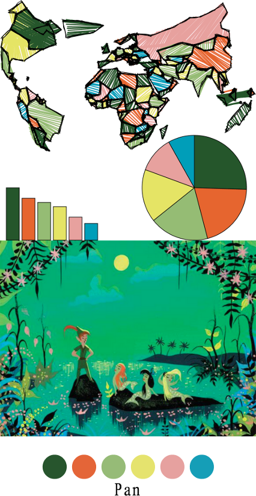
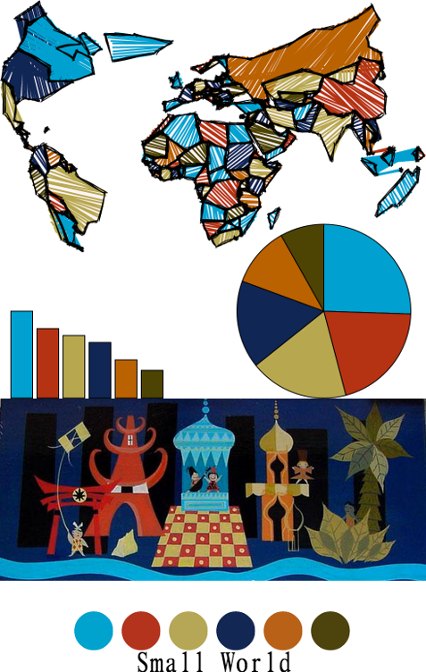
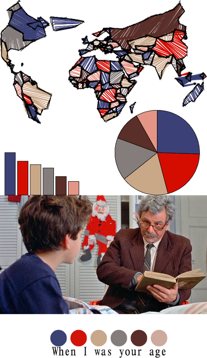
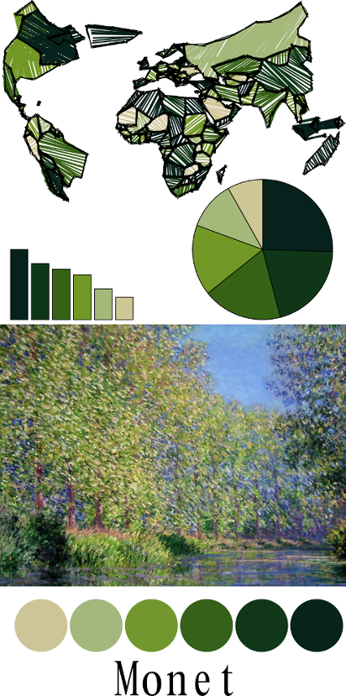

From the original site / 2015-08-17
This archived piece preserves its original text and historical context.
Generating palettes the old-fashioned way
A couple weeks back I complained about the lack of diversity of palettes in the data visualization world, and especially in data visualization products created with D3. That post provided a few resources for generated palettes, but ignored the best way to identify a truly striking and original palette. This post focuses on using artistic works to derive just such a palette for data visualization.
The method is a well-worn one: find a work of art, or an iconic scene in a movie or television episode, or photograph. From that, find the five or six or seven distinct colors you need. Most of the examples below are from the renowned colorist Mary Blair, whose work at Disney was responsible for so many iconic movies (and theme park rides).
What follows are a few examples and the arrays of colors used.

alice = d3.scale.ordinal().range(["#827abf", "#f62150", "#6f89b6", "#f5e0b7", "#5b1e37", "#b9e3c5"]);

cinderalla = colorScale = d3.scale.ordinal().range(["#96abb1", "#313746", "#b0909d", "#687a97", "#292014"]);

pan = d3.scale.ordinal().range(["#27552d", "#e46538", "#96bb77", "#e5e36e", "#e6a19f", "#159eb7"]);

smallWorld = d3.scale.ordinal().range(["#00a2ce", "#b3331d", "#b6a756", "#122753", "#b86117", "#4d430c"]);
You don't need a renowned colorist to find a palette.

whenIWasYourAge = d3.scale.ordinal().range(["#3b4274", "#d2130a", "#c8a88a", "#857d7b", "#592e2a", "#e39587"]);
And there are more than enough monochromatic works if you need a palette for bucketed numerical data.

monetGreen = d3.scale.ordinal().range(["#08221c","#113719","#36611b","#72972f","#a4b77d","#cdc597"]);
For more inspiration, you can take a look at Wes Anderson Palettes which does the above but with that filmmaker's movies. And if you're still too scared to make that decision, you can play around with Adobe's automated palette generation toy until you feel safe enough to pick a handful of colors.